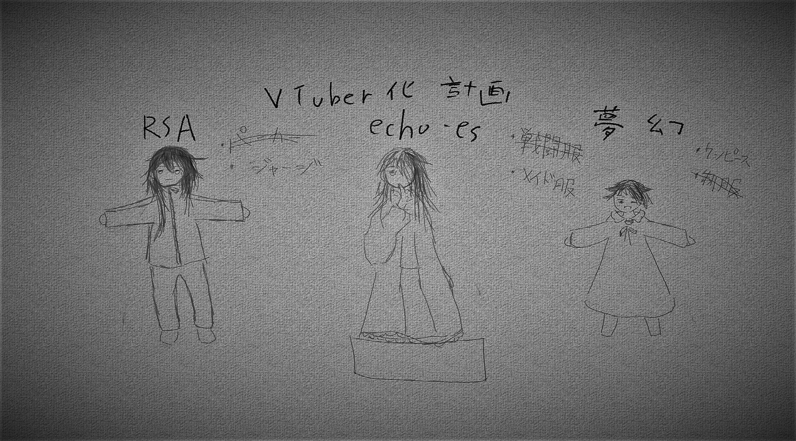

3日目の活動報告書
我々CTF部の目下の課題
それは「コミュニケーションとは何か」であった。
ある者は、すべてのコミュニケーションは就職のためだと言い
ある者は、他者に影響を与えなければコミュニケーションとは呼べないだろうと言い
そしてロマンチストである部長は「お前らは...お前らは...」と泣いていた。
この議論をCTF部らしからないものと思う方もいるだろうが、communicationの意味を思い起こせば、情報をやりとりする、つまり通信するということであるから、ICTに取り憑かれた我々にとって、重要な議題であることが理解できるであろう。
議論は進み、脱線を繰り返し、我々は新たなる議題を見出した。
最近ICTが生み出した新しいコミュニケーションの形態を作り出す、Virtual YouTuberである。
かくして「部員VTuber化計画」なる恐るべきものが企てられ、それは今水面下で着々と準備が進んでいるらしい。
ここにその狂気の沙汰とも言える計画の一部資料を掲載しておこう。

絵と機材、この二つが揃ってしまえば、顔も知らぬ有象無象とコミュニケーションを成立させるVTuberになれてしまうのだから、全く混沌極まる時代になったものだ。